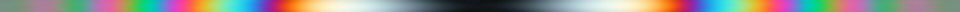
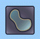
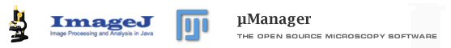

Applying analytical and deep learning techniques to realize microscopic birefringence imaging in 3D.
|
Polarized
Light Field Microscopy Applying analytical and deep learning techniques to realize microscopic birefringence imaging in 3D. |

from the Laboratory
of Rudolf Oldenbourg at 

OpenPolScope an
open implementation of birefringence imaging system which can be
added to most optical microscopes. Created and maintained by
the Oldenbourg Lab.
We utilize and contribute to the Python and Java open-source bioimage informatics ecosytems.
 napari
Polarization,
Quaternions and all that